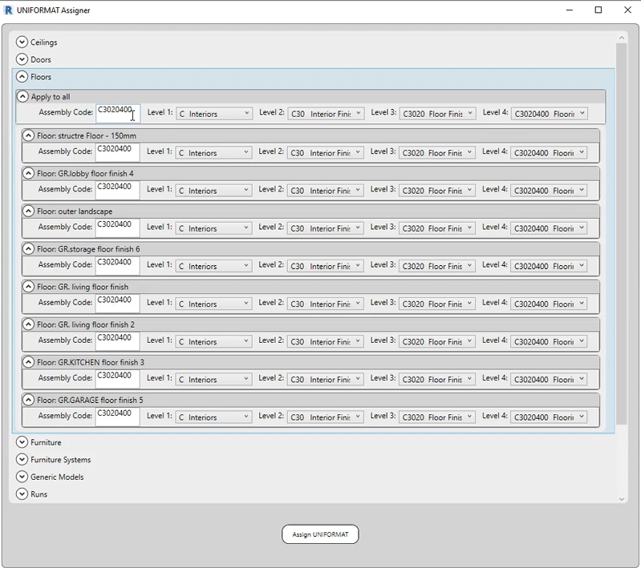

Demos & interface



9 tools · video
C# · Revit API · WPF · Excel interop
A suite of enterprise Revit add-ins built for architecture and engineering teams, covering model management, interior finishes workflows, quantity take-off and bulk file operations. Each one replaced a manual process that consumed engineering hours every week.
All demos below are recorded against a generic sample model.
